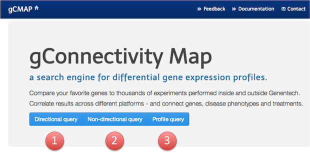
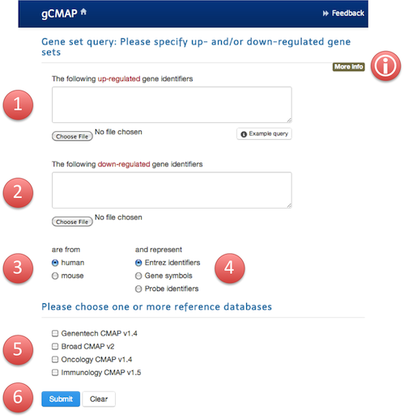
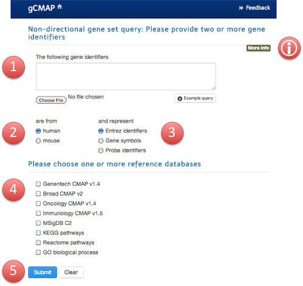
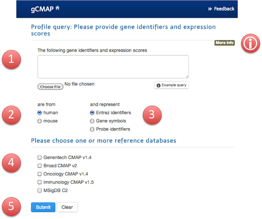
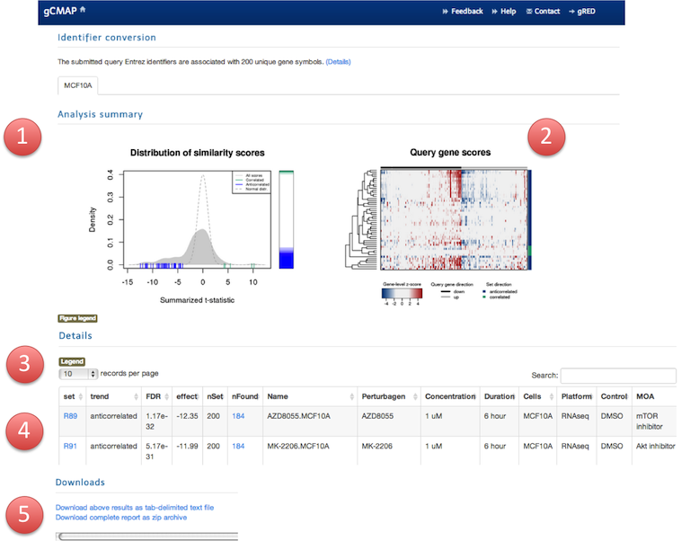
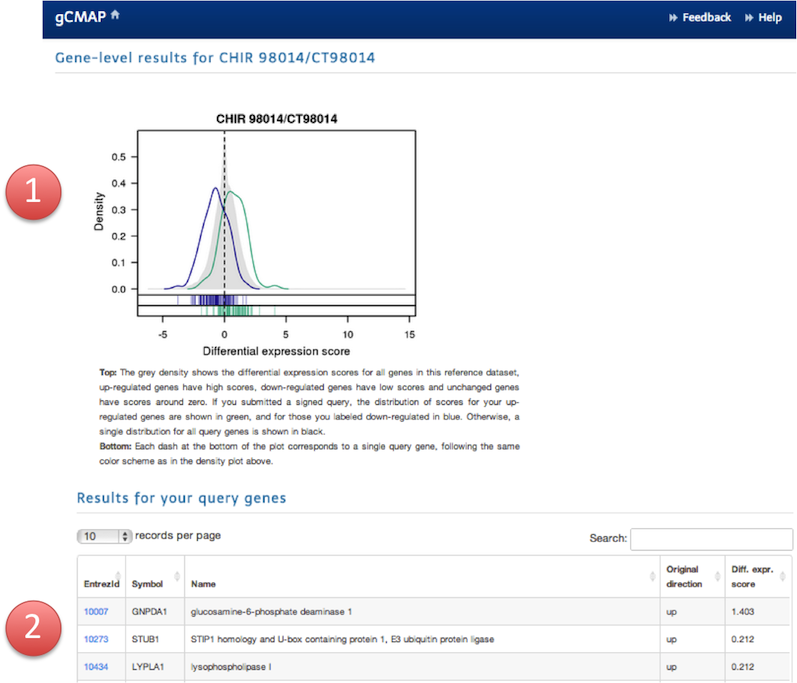
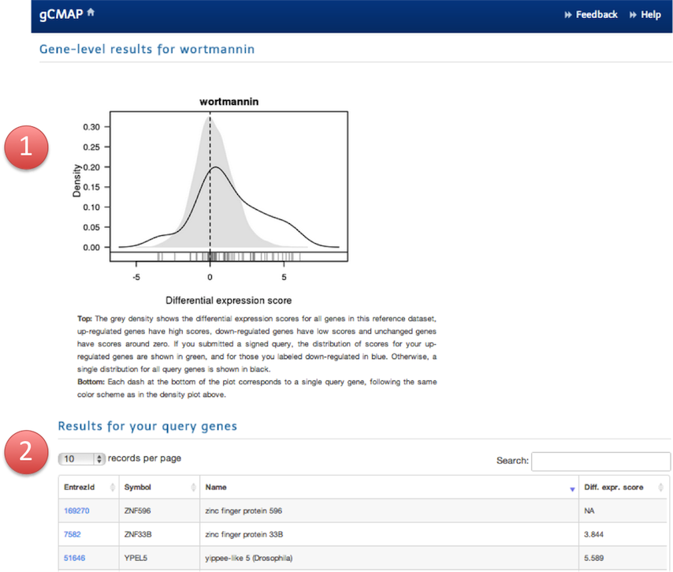
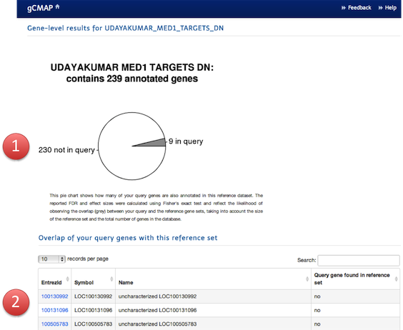
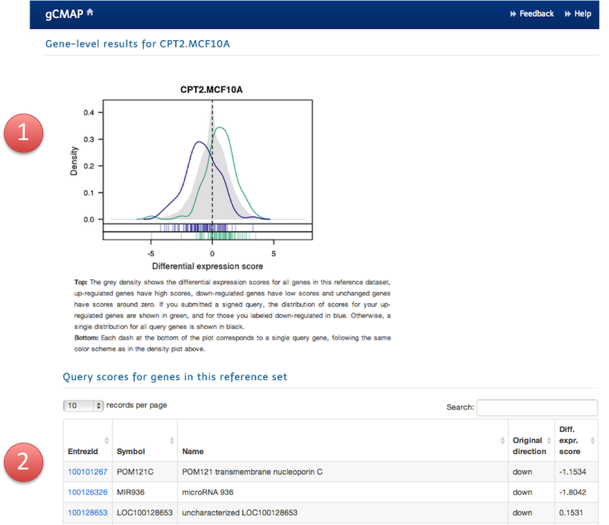

Global expression profiling experiments using microarray or next-generation sequencing technology are routinely used to record how cells or tissues respond to experimental perturbations. Many perturbations, e.g. drug treatments or genetic modifications, cause characteristic changes in gene expression - a fingerprint often recognizable across different laboratories and model systems (Lamb et al, 2006).
Identifying different perturbations that share a similar fingerprint can reveal functional connections between drugs, genes and diseases. Starting with your set of gene identifiers or a complete set of scores from your differential gene expression experiment, the gCMAP tool searches one or many reference databases for other experiments showing similar changes in gene expression. Start building your own connectivity map today !
The gCMAP tool supports three types of queries:

For this query, you need a set of gene identifiers, e.g. Entrez identifiers or gene symbols - and you need which genes are expected to change their expression in the same directions. For example, you may know that one set of genes is up-regulated in response to your perturbation of interest, while another set of genes is down-regulated instead.
The gCMAP tool can leverage this information to find experiments, in which - a significant proportion of these genes was also differentially regulated - in the same (correlated) or opposite (anti-correlated) directions as your query.
You only know about up- regulated genes ? Simply leave the text input field for down-regulated genes empty.
You know that your genes changes consistently into the same direction, but are not sure if they go up or down ? Never mind, just paste all of them either into the up- or down-regulated text field (but not both). The gCMAP tool will report experiments with significant changes in either direction and indicate whether the direction was the same (correlated) or opposite (anti-correlated) with your choice.
If you have a set of gene identifiers that may show mixed expression changes, in other words some may be up- some down-regulated, this query is for you. The gCMAP tool won't make any assumptions about the direction of expression change and will retrieve all experiments, in which a significant fraction of your genes of interest showed differential expression either way.
If you have done your own differential gene expression analysis or have access to the complete results from a published study, you can provide the gCMAP tool with the complete list of differential expression scores (e.g. z-scores). For this query, you every row needs to contain two pieces of information:
If you want to submit a directional gene expression query, e.g. two sets of gene identifiers - one with up- and one with down-regulated genes, you need to provide the following pieces of information.

Hint: The More info button provides additional information and points out references for the gene-set enrichment method used by the gCMAP tool uses for this query.
A non-directional query is a good choice if you have a mixed bag of gene identifiers, some of which may by up- some down-regulated. (But hey, why not give the directional query a try as well ? Just in case there are experiments, in which they all change consistently in one or the other direction.)

Please provide the following pieces of information:
The More info button provides additional information and references about gCMAP's gene-set enrichment method
You have a complete set of global differential gene expression scorse ? Great, go ahead and run a profile query by pasting them into box number 1 - or uploading them in a plain text file.

The More info button provides additional information and references about gCMAP's gene-set enrichment method
Once you submitted your query, the gCMAP tool will search all selected databases for significantly similar experiments. The first result page will present your with a list of the most significant reference datasets matching your query. You will receive a separate panel with results for each searched reference database.
Each panel contains the following elements:

This plot gives you a high-level overview of the gCMAP results. The grey density plot summarizes the scores for all experiments in this reference dataset - similar or not. In this example (and most likely for your query as well) the majority of experiments is not very similar at all and receives a score around zero. For reference, the normal distribution is shown as a dashed line.
Few scores obtain very high or very low scores - they are highlighted as green and blue dashes at the bottom of the plot, respectively, if their score is > 3 or < -3. The gene set scores are also shown in rank-ordered form on the right, providing a quick overview of the fraction of gene sets with significant similarity. High scores are shown at the top (green) and low scores at the bottom (blue)In this example, only few experiments received high scores (green), indicating expression changes in the same direction as in the query, but a large number of experiments showed consistent changes of the query genes in the opposite direction (blue) than specified in your query.
If the reference dataset contains quantitative information, a clustered heatmap of will be generated. Every row corresponds to an experiment in the reference database and every column corresponds to a query gene. The differential gene expression scores are indicated in color, ranging from blue (down-regulated) to red (up-regulated). For a directional query, the gene identifiers submitted as up- and down-regulated are kept separate and the groups are indicated as black (query genes submitted as down-regulated) and grey (query genes submitted as up-regulated) lines above the columns.
Gene sets are clustered hierarchically using a euclidian distance matrix. To identify the gene set corresponding to a branch in the dendrogram, either click on the figure to enlarge it or refer to the table below. The first column, branch, provides the position of the gene set in the dendrogram, with 1 corresponding to the top branch.
Once you have identified a reference experiment that is significantly similar to your query, you can inspect the details of for individual reference datasets at the gene level.
When you click on the nFound column in the main result table, highlighting the number of genes shared between your query and the reference gene-set, you will be presented with the gene-level results.
Depending on your query type, the results will be presented in slightly different formats.
For directional queries, the gene-level report will display the distribution of scores in a density plot. The plot may look similar to that shown on the main result page - but it contains very different data !
While the former displayed one similiarity score for each reference dataset, this plot shows the differential gene expression scores your individual query genes received in this reference experiment .

At the top, the grey density shows the differential expression scores for all genes in this experiment, up-regulated genes have high scores, down-regulated genes have low scores and unchanged genes have scores around zero.
The blue and green lines highlight the differential expression scores your query genes obtained in this experiment. The scores for your up-regulated genes are shown in green, those you labeled down-regulated are shown in blue.
In the rug at the bottom of the plot, the scores of individual query genes are indicated, with colors matching those of the distributions show above.
In the example shown above, most of the genes expected to be up-regulated (green) received scores > 0, while most of the genes expected to be down-regulated (blue) received scores < 0: The expression of the query genes in this reference experiment is therefore correlated with the original observations.
Below the plot, the individual results for all query genes found in this experiment are tabulated.
gCMAP can search both databases that provide quantitative experimental results (e.g. z-scores) and resources providing only lists of gene identifiers (e.g. gene sets maintained by the KEGG database). Depending on the information available in the reference, a non-directional query will return gene-level results in one of two formats:
If quantitative information is available, a density plot is drawn separately simultaneously displaying the background distribution (scores for all genes in the experiment) and the scores for your query genes.

At the top, the grey density shows the differential expression scores for all genes in this experiment. Up-regulated genes have high scores, down-regulated genes have low scores and unchanged genes have scores around zero.
The black line and the rug at the bottom of the plot highlight the differential expression scores your query genes obtained in this experiment. In this example, many of the submitted query genes are up-regulated in the reference experiment: the distribution of scores is markedly shifted to the right. A smaller subset of query genes is down-regulated and shifted to the left (giving rise to a second, minor mode of the density distribution). Submitting a non-directional query is a good choice when the query gene set is heterogeneous, e.g. you are interested in results, in which some of the query genes are up- and other down-regulated, as in this example.
Below the plot, the individual results for all query genes found in this experiment are tabulated.
Some reference datasets do not provide gene-level scores. For example, public databases like the MSigDB database list only gene identifiers for many different gene sets. In this case, the gCMAP tool identifies reference experiments with significant overlap between query sets and the reference database using a Fisher test.

The pie chart shows the fraction of query genes overlapping with the reported reference gene set and also provides information about the absolute number of genes. In this example, the reference gene set contains a total of 239 genes, 9 of which are also part of the submitted query gene set. This is a small, yet significant overlap, given the large number of genes annotated in the reference database.
The table below the plot indicates which of your query genes were also found in the reference gene set, and which ones were not.
Technically, a profile query is the reverse of a directional query: in the former, you provide the global differential gene expression scores and gCMAP matches them to the gene identifiers in the reference database. In the latter, you provide a list of gene identifiers and gCMAP retrieves the differential expression scores these genes received in many other experiments from its reference database.
The results from a profile query are displayed in a similar fashion as those from a directional query - but the data displayed is not same !

In a profile query, the grey background density corresponds to your query, the global differential gene expression scores your provided. In this example, the vast majority of genes known to be down-regulated in the reference dataset (blue) is also down-regulated in your experiment: the blue density curve / rug is shifted to the left. Similarly, the genes known to be up-regulated in the reference dataset (green) is also up-regulated in the submitted query: the green density / rug is shifted to the right.
The green and blue density curves and the rug highlight your scores for those genes that are part of the reference gene set, e.g. genes identified to be differentially regulated in the archived experiment.
The table below lists the individual scores the members of the gCMAP reference experiment obtained in your query experiment.